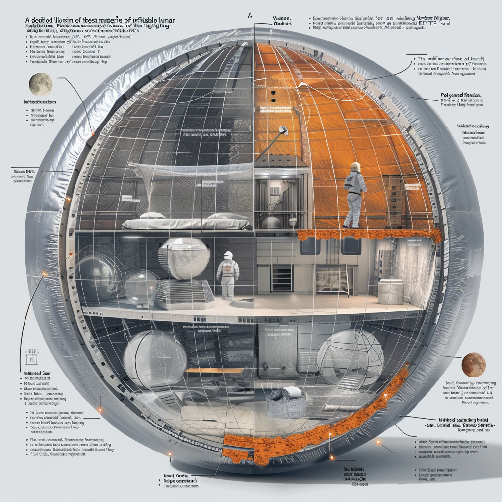

Layout Overview

Central Hub
- Command center, administrative offices, control room: The central hub serves as the operational heart of the habitat, ensuring effective coordination and management of all habitat activities, including communication, logistics, and overall base operations.
Living Quarters
- Private cabins, shared facilities, recreational areas: Designed to provide comfort and privacy for the crew with spaces for social interaction and relaxation.
Laboratories
- Specialized labs for various scientific disciplines: Equipped for research in areas such as biology, chemistry, physics, and materials science with modular workstations and advanced scientific instruments.
Medical Facilities
- Clinic, emergency room, quarantine rooms: Comprehensive medical facilities for routine care, emergency response, and isolation of contagious illnesses.
Recreational Areas
- Gym, sports facilities, central park with hydroponics: Spaces for physical activity and social interaction to maintain the crew's physical and mental health.
Storage and Utility Areas
- Water tanks, waste management, technical workshops: Critical for maintaining infrastructure and operations of the habitat with water supply, waste processing, and equipment maintenance.
Surface Access
- Charging ports, docking facilities for lunar rovers: Efficient surface access points for transfer of supplies and personnel between the habitat and the lunar surface.